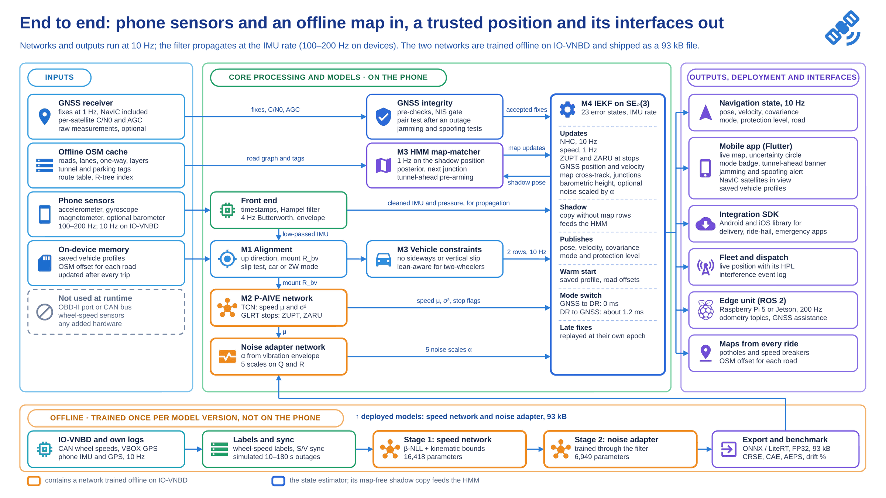

Smart India Hackathon 2026 · Problem Statement 26168 · ISRO
Keeps a phone navigating through tunnels, basements and GNSS jamming, and tells you how far to trust its position. It needs only the phone's own sensors and an offline map: no OBD port, no extra hardware.
Prototype in development · the live demo will be published at this addressClosed-form design budgets and a pessimistic compute estimate. Benchmark runs on the IO-VNBD dataset will replace them.
Each concrete slab costs 14–17 dB of signal. A 10 mW pocket jammer drops C/N0 from 45.5 to 18 dB-Hz at 1 km, and GPS spoofing near Delhi's IGI airport was reported to Parliament in December 2025.
Integrated on its own, a phone IMU breaks a 10% drift budget in 8–34 seconds. A 20 mg accelerometer bias alone is 353 m after a minute, and road vibration is about 1,000× the sensor's noise.
About 260 million two-wheelers against 50 million cars. Most have no usable OBD speed, and the phone sits in a loose holder that can slip or swivel.
One right-invariant Kalman filter (IEKF) on the phone fuses a learned speed, the vehicle's motion constraints, stops and an offline OpenStreetMap. When GNSS drops, nothing is swapped: fix updates stop, everything else keeps running, and a protection level reports how far the position can be trusted. Switching from GNSS to dead reckoning takes 0 ms; switching back takes about 1.2 ms of compute.

Ranked by the drift each one removes in a 60 s, 1 km tunnel at 60 km/h (design budget).
A virtual odometer trained on CAN wheel speeds and run from the IMU alone, with noise scaled to the measured road vibration.
Learns how the phone sits in the vehicle from turns, and re-learns it when the phone tips, swivels or loosens.
Treats OpenStreetMap's own offset as a filter state, remembered for each road; a map-free shadow filter stops the map confirming itself.
Tells a scooter from a car within about one turn, and keeps lean apart from real slides on wet roads and gravel.
Design budgets and estimates until the IO-VNBD benchmark runs are in.
| Target | This design | Shown by |
|---|---|---|
| Tunnel: < 100 m over 1 km at 60 km/h | 43.5 m (53 m worst case) | IO-VNBD simulated outages |
| Car park: < 5 m over 50 m | 3.3 m (4.4 m worst case) | own logs; IO-VNBD has no car park |
| Phone: 10 Hz, < 15 ms per cycle | 8.4 ms at a pessimistic 0.1 GMAC/s | on-device benchmark |
| Edge: about 200 Hz | 200 Hz propagation, 9.7 MMAC/s | Raspberry Pi 5 or Jetson run |
| Mode switch: < 100 ms, both ways | 0 ms to DR; about 1.2 ms back to GNSS | run-log timestamps |
| Model: < 1.5 M parameters, < 15 MB | 23,367 parameters, 93 kB | exported model files |
| No OBD or CAN at runtime | phone sensors, GNSS and OSM only | phone-only IO-VNBD sessions |
| Cross-track ≤ 1.75 m | 1.4 m where the lane is known; 1.4–6.3 m road-level otherwise | map ablation |
| Re-lock < 50 ms | set by the receiver (1 s hot start); the edge build feeds it the DR position | receiver and filter logs |
The two restated rows are limits of the map and the GNSS receiver, not of the software: lane-level accuracy needs a lane-level map, and re-acquisition time belongs to the receiver.